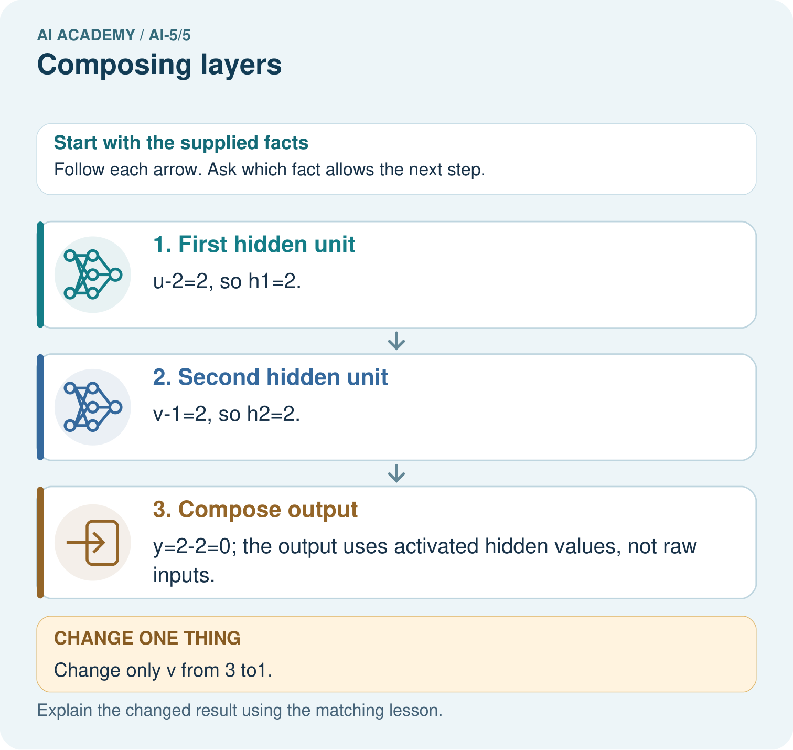

AI Academy · Level 5 · Grade 10 · Week 5 · Teacher guide
Composing layers
Learn to understand, design, build, test and explain AI systems responsibly.
Project: Image-pattern Network Investigation
Teacher guide · 1 of 7
Prepare the purpose, prerequisites and materials
Teach the learning cycle
Primary target: Trace how one layer supplies the next layer inputs
| Session | Sequence and minutes | Resources |
|---|---|---|
| Session 1 · Understand · 45 min | 0–7: recall and prerequisite; 7–15: inspect the concrete case and predict; 15–30: teacher models the worked trace; 30–40: learners explain a step using the text and visual; 40–45: check the core idea. | Sections 1–6; record the brief recall in the workbook. |
| Session 2 · Practise · 45 min | 0–5: retrieve the procedure; 5–15: W2 completion practice; 15–23: explain and check with a partner; 23–30: each learner answers the misconception check; 30–40: targeted reteaching or a harder variation; 40–45: prepare the investigation. | Sections 7–10; use the matching workbook W2 and misconception check. |
| Session 3 · Investigate and transfer · 45 min | 0–5: retrieve the decision rule; 5–20: investigate or trace; 20–30: start the independent case; 30–38: connect the project; 38–43: act on feedback; 43–45: plan the return check. | Sections 9 and 11–14. Give extra time to finish the full task set; use Section 15 when the week includes a coding lab. |
This is a starting allocation of 135 minutes, not a validated duration. Preserve all named topics. Schedule extra time for connected examples, the full investigation, independent cases and project building. Repeated copies of a case share one recorded attempt; they are not new evidence.
Retrieval answer guidance
Activation functions
Without opening the old lesson, explain one key idea from Activation functions. Give an example and a mistake that the idea helps you avoid.
Look for: Trace identity ReLU and sigmoid on a numerical score
Reference example, not the only acceptable wording: Teacher explanation: Identity gives -2, 0, 2; ReLU gives 0, 0, 2. ReLU retains the positive score itself; it is not a step classifier.
Dot products and weighted sums
Without opening the old lesson, explain one key idea from Dot products and weighted sums. Give an example and a mistake that the idea helps you avoid.
Look for: Calculate a dot product by matching feature positions
Reference example, not the only acceptable wording: Teacher explanation: Contributions are 6 and -5, so the score is 1.
Teach composition through explicit numerical traces in two 45-minute sessions. Keep the layer definition, order and activation visible. The aim is to understand which values each computation receives, not to memorise a network drawing or claim successful training.
Outcomes
Trace how one layer supplies the next layer inputs
Check that connected layer dimensions and feature order agree
Explain why intermediate activations are not automatically class predictions
Preparation
Printed lesson and workbook; paper and pencil
Calculator and optional local Python 3 editor; no packages or AI accounts needed
Use the fictional examples supplied; prepare the fresh retry before class
Prerequisite answer
ReLU returns 0 and 3. It transforms a numerical score. A class prediction requires a separate declared output rule.
End goal for the pictorial case
By the end, I can explain composing layers using a traced example and a stated limitation.
This added worked case illustrates the week’s main idea. Retain all original and connected topics; schedule its practice within the teaching cycle.
Teacher guide · 2 of 7
Explain and model the mechanism
A network connects layers so that the output vector of one layer becomes the input vector of the next. Use a fictional numerical input x = [x1, x2]. The first layer computes z1 = x1 - x2 and z2 = x1 + x2 - 2, then applies ReLU separately: h1 = max(0, z1), h2 = max(0, z2). Its output is the ordered vector h = [h1, h2].
The next layer computes y = 2h1 - h2 + 1. It receives h, not the original x. It uses weights [2, -1] and bias 1, with identity as its output activation. This is a two-layer computation when counting the layers with weights; an input placeholder is not counted here. All parameters are supplied, so this lesson performs no training.
The two first-layer units both receive the same original x. They can be calculated in either order. Only after both activations are available do we evaluate the output layer.
Take x = [3, 1]. First compute z1 = 3 - 1 = 2 and z2 = 3 + 1 - 2 = 2. ReLU gives h = [2, 2]. The output layer receives exactly this ordered pair and returns y = 2 times 2 - 2 + 1 = 3. Record z, h and y separately so that a correct final number cannot hide an incorrect intermediate step.
The code assumes numeric inputs with the agreed meaning. Its length check does not validate units or field order. Python indices 0 and 1 correspond to the first and second hidden components. There is no feedback from y into h during this forward calculation.
| Term | Meaning |
|---|---|
| Layer | A group of computations that maps an input vector to an output vector |
| Hidden activation | An intermediate value computed inside a network |
| Composition | Applying one function to the output of another |
| Forward calculation | Computing successive values from an input using fixed parameters |
Complete each stage before using its output
Guided: x = [1, 1] gives z = [0, 0], h = [0, 0], y = 1. Using x directly would give 2, skipping the hidden transformation. Exit: compatible shapes and execution check whether the specified computation can run, not whether predictions match real labels. Accuracy requires appropriate labelled examples, a metric and independent evaluation.
Model the reasoning aloud
Use the complete worked example below before asking learners to complete W2. Reveal a small part, invite a prediction, then explain the deciding step. These teacher notes contain solutions; do not reveal the independent case answer during modelling.
Complete each stage before using its output
| Thinking move | Teacher prompt |
|---|---|
| Plan | What is given? What is the question? Which procedure fits these facts? |
| Do | Point to each input and intermediate step in the worked trace. Name the rule that allows the next step. |
| Check | Does the output answer the question? Which assumption or limitation prevents a larger claim? |
Use the diagram and verbal explanation together. Ask learners to match a sentence to a specific visual step; do not assign learners fixed visual or auditory learning styles.
A pictorial worked case: Composing layers
Compose two hidden detectors before one output instead of skipping a layer.
The facts we will use
For input [u, v], h1=ReLU(u-2), h2=ReLU(v-1), y=h1-h2. Input [4, 3].
All inputs and outcomes in this worked example are invented classroom data; no real model run is claimed.

Read the picture one step at a time
Why this result follows
Composition means one layer’s result becomes the next layer’s input. Compute both hidden units before combining them. At [4,3], their equal outputs cancel. Lowering only the second input removes its positive hidden contribution, so subtracting it no longer reduces the output. The final subtraction must use activated hidden values rather than the raw measurements.
What this example does not establish
Hand-composed detectors illustrate layer order; they are not evidence of a learned or biologically realistic neural mechanism.
Change one thing in the pictured case
Change: Change only v from 3 to1.
Prediction: h1 stays2, h2 becomes0, y becomes2.
Reason: The second hidden unit’s preactivation reaches0 while the first unit is unchanged.
Ask while showing the picture
Cover the result. Ask learners to name the inputs and predict the next step. Uncover one step, connect the icon to the actual procedure, and explain its evidence. Then change the supplied condition and compare. The picture is a representation; it does not document execution of a real AI model.
Teacher guide · 3 of 7
Demonstrate and guide practice
| Time or stage | Teacher action |
|---|---|
| Session 1 start to 7 minutes | Retrieve ReLU at negative, zero and positive scores. Ask students to distinguish an activation from a class. |
| 7 to 18 minutes | Write both first-layer formulas side by side. Draw arrows from the same x to both; label the ordered hidden output. |
| 18 to 32 minutes | Trace [3, 1] together, then use W1. Require scores before ReLU and output contributions after ReLU. |
| 32 to 45 minutes | Run or trace the optional Python and complete the guided [1, 1] case. Ask why directly substituting x into the output formula is incorrect. |
| Session 2 start to 8 minutes | Retrieve the two layer input/output sizes. Let students describe composition in one sentence. |
| 8 to 20 minutes | Complete W2 and W3. Compare a swap-insensitive case with a revealing case before discussing bug coverage. |
| 20 to 35 minutes | Collect W4 independently before hints. Check both pre-activation scores, both activations, q and class under the declared threshold. |
| 35 to 45 minutes | Complete W5 and the exit response. Give targeted feedback and the fresh retry without replacing the original assessment record. |
Use the worked example in Sections 3 and 6. Collect a prediction before revealing its result; ask the learner to point to each intermediate fact.
Provide a five-column trace table labelled x, z, h, output contributions and y. Allow arithmetic support while requiring the student to name each connection. Extension: replace hidden ReLU with identity and simplify the lesson network to y = x1 - 3x2 + 3. Test [1, 3] to show that the simplified affine model differs from the ReLU model.
Reduce help deliberately
Completion task: A revised hidden layer returns [h1, h2, h3]. The output layer still has weights [2, -1]. Explain the mismatch and what must be specified before calculation.
Teacher check: Teacher explanation: Three hidden values need three matching weights under this dense output definition. Specify all three coefficients and the bias or explicitly design a documented selection operation. Do not silently drop the third value.
Start by identifying the given inputs together. Leave the intermediate steps blank. If needed, model one step, then withdraw that help on the next step. Move to a full trace only when the partial trace is understood. For partners, alternate explainer and checker; collect a response from every learner before discussion.
Individual reasoning check
Use the worked case for Composing layers. Proposed explanation: “The second hidden unit receives the first hidden unit output”. Decide whether this explanation is supported. Point to the step or supplied fact that decides; explain your repair if needed.
Expected correction: Both units in this hidden layer receive x. The next layer receives the pair of activations after both are computed.
Collect explanations, not only yes/no votes. If a misunderstanding is common, re-model the relevant step for the class. If it affects a few learners, give a short targeted group explanation while others solve a more demanding variation.
Pictorial practice question
What intermediate value explains the changed output? Point to the relevant step in the picture, then write the changed result and the rule or evidence that supports it.
Reasoned teacher answer
h2 changes from 2 to 0 because ReLU(1-1)=0; subtracting0 rather than2 raises y from 0 to2. Changed-case check: h1 stays2, h2 becomes0, y becomes2. The second hidden unit’s preactivation reaches0 while the first unit is unchanged.
Changed-case reasoning: h1 stays2, h2 becomes0, y becomes2. The second hidden unit’s preactivation reaches0 while the first unit is unchanged.
Collect each learner’s explanation before discussion. Use the first missing connection between input, deciding step and result to choose support. This question is worked-case practice, not fresh mastery evidence.
Teacher guide · 4 of 7
Run the investigation and diagnose misconceptions
The second hidden unit receives the first hidden unit output: Both units in this hidden layer receive x. The next layer receives the pair of activations after both are computed.
Two numbers mean the connection must be correct: Matching lengths do not establish matching order or meaning. Trace a case with unequal hidden activations.
A hidden unit is already a class prediction: Its activation is an intermediate numerical feature. A declared output rule assigns the final class.
Use Section 9 for the evidence ledger. Add a boundary or missing-input case and record the expected response before checking. More successful repeats of one case do not establish wider coverage.
Match the support to the first error
| What the response shows | Next teaching action |
|---|---|
| Missing or misread facts | Read the case aloud, mark supplied versus unknown facts, and let the learner restate it. |
| Wrong procedure | Return to the deciding step in the worked case. Contrast it with the proposed incorrect explanation. |
| Arithmetic or implementation error | Trace intermediate values or lines; preserve the first mismatch and retry that step. |
| Correct result without a reason | Ask for a trace and a changed case before marking independent understanding. |
| An unsupported wider claim | Ask which supplied evidence supports the claim and which further observation would be needed. |
Offer an oral explanation, drawing, enlarged visual or fewer examples when that removes a reading/writing barrier. Keep the same reasoning goal. Stretch secure learners by changing a boundary or assumption and asking them to defend the effect, not simply by assigning more of the same questions.
Teacher guide · 5 of 7
Assess and explain the answers
Guided and exit questions
Guided: x = [1, 1] gives z = [0, 0], h = [0, 0], y = 1. Using x directly would give 2, skipping the hidden transformation. Exit: compatible shapes and execution check whether the specified computation can run, not whether predictions match real labels. Accuracy requires appropriate labelled examples, a metric and independent evaluation.
W1 Trace the second worked case
For x = [1, 3], write both scores, both ReLU activations and y using the lesson model.
Teacher explanation: Scores are -2 and 2; activations are 0 and 2; y = 0 - 2 + 1 = -1.
W2 Repair a dimension mismatch
A revised hidden layer returns [h1, h2, h3]. The output layer still has weights [2, -1]. Explain the mismatch and what must be specified before calculation.
Teacher explanation: Three hidden values need three matching weights under this dense output definition. Specify all three coefficients and the bias or explicitly design a documented selection operation. Do not silently drop the third value.
W3 Use a revealing order check
Compare hidden vectors for x = [4, 1] and x = [3, 0]. Which input reveals a bug that swaps h1 and h2 but keeps output weights unchanged? Give correct and swapped outputs for that input.
Teacher explanation: The first gives [3, 3] and cannot expose a swap. The second gives [3, 1]; correct output 6 becomes 0 when values alone are swapped.
W4 Compose a new network independently
A new model takes [u, v]. Compute a = ReLU(u + v - 3), b = ReLU(u - v), then q = a + 2b - 1. Trace both inputs [2, 1] and [1, 2], including scores before ReLU. Apply class 1 when q >= 0. State the hidden and output vector sizes.
Teacher explanation: For [2, 1], scores 0 and 1 give [a, b] = [0, 1], q = 1 and class 1. For [1, 2], scores 0 and -1 give [0, 0], q = -1 and class 0. Hidden dimension is 2; output dimension is 1. The equality at hidden score zero produces activation zero, not an automatic final class.
W5 Explain information loss
Use the lesson model to verify h and y for [0, 1] and [0, 2]. Could a fixed later layer receiving only h distinguish the two original inputs?
Teacher explanation: Scores are [-1, -1] and [-2, 0]. Both produce h = [0, 0] and y = 1. A deterministic later computation given the same h produces the same result; additional original-input information would require a changed architecture.
Independent assessment and fresh retry
W4 requires both complete traces, correct classes and sizes. Fresh retry: a = ReLU(u - 1), b = ReLU(v - 2), q = 2a - b. Inputs [0, 3] and [2, 2] give pre-activation scores [-1, 1] and [1, 0], hidden vectors [0, 1] and [1, 0], and q values -1 and 2. Under q >= 0 their classes are 0 and 1. Ask which vector the output layer actually receives.
Assess independent transfer
Selected case: A new model takes [u, v]. Compute a = ReLU(u + v - 3), b = ReLU(u - v), then q = a + 2b - 1. Trace both inputs [2, 1] and [1, 2], including scores before ReLU. Apply class 1 when q >= 0. State the hidden and output vector sizes.
Selected case answer
Teacher explanation: For [2, 1], scores 0 and 1 give [a, b] = [0, 1], q = 1 and class 1. For [1, 2], scores 0 and -1 give [0, 0], q = -1 and class 0. Hidden dimension is 2; output dimension is 1. The equality at hidden score zero produces activation zero, not an automatic final class.
| Dimension | Evidence required |
|---|---|
| Explanation | Names the applicable idea or procedure and ties it to the supplied facts. |
| Trace and result | Preserves the given inputs and shows the relevant intermediate steps; distinguishes a prediction from an observed execution. |
| Limits | States the assumptions, missing evidence or conditions under which the result would change. |
Record each dimension as not yet, with support, or independent. Accept a valid alternative procedure with a defensible trace. Do not penalise an honestly recorded model failure if the learner correctly explains its evidence and limits.
Feedback that the learner uses
Name the earliest unsupported step and give one action to repair it. Have the learner make that repair now and explain why. Then assess the relevant skill on a fresh, fully specified case. Confirm it was not previously practised with feedback; solve and check the new case before assigning it. A follow-up design prompt is a starting brief, not automatically an equivalent test.
Teacher guide · 6 of 7
Connect the project, support and next lesson
Add a labelled composing layers evidence sheet to Image-pattern Network Investigation. Show how you can trace how one layer supplies the next layer inputs. Use the supplied fictional case and keep its inputs, intermediate steps, calculation or prediction, and limitation. Connect this record to last week’s record; a matching answer without a trace is insufficient.
Provide a five-column trace table labelled x, z, h, output contributions and y. Allow arithmetic support while requiring the student to name each connection. Extension: replace hidden ReLU with identity and simplify the lesson network to y = x1 - 3x2 + 3. Test [1, 3] to show that the simplified affine model differs from the ReLU model.
Week 6 develops forward passes by hand and systematic checking of intermediate values.
Retain the project ledger and assess a changed case after support. Check the relevant prerequisite before carrying this component forward.
Plan the delayed return
Suggested return points in this level: ai-5/6, ai-5/8, ai-5/11. Use actual classroom dates, adjusting for holidays and gaps. One, three and six teaching weeks are scheduling choices, not a claimed optimal spacing.
At a delayed check, ask for the idea from memory and a changed application. Compare with the earlier independent response and record support used. For a new level, revisit the previous capstone before checking the new prerequisites.
| Record | Teacher evidence |
|---|---|
| Learner code and date | |
| Concept and case used; prior exposure | |
| Explanation / trace / limits | |
| Support and first repair | |
| Changed case and delayed outcome | |
| Next teaching action |
Use the evidence to choose reteaching or the next step. A completed page, confidence rating or attractive project does not by itself demonstrate understanding.
Project evidence from this case
For your Image-pattern Network Investigation, save the input, procedure, observed result and limitation of this check. Label this worked example as practice; use a different, previously unreviewed case when checking independent understanding.
Teacher guide · 7 of 7
Prepare, teach and assess
Teaching target: Trace how one layer supplies the next layer inputs
Prepare the labelled worked-case picture, the matching workbook, fictional input cards and a place for individual responses. Check a local Python 3 environment before class; have a paper-trace version ready.
| Session | Plan | Resources |
|---|---|---|
| Session 1 · Understand · 45 min | 0–7: recall and prerequisite; 7–15: inspect the concrete case and predict; 15–30: teacher models the worked trace; 30–40: learners explain a step using the text and visual; 40–45: check the core idea. | Sections 1–6; record the brief recall in the workbook. |
| Session 2 · Practise · 45 min | 0–5: retrieve the procedure; 5–15: W2 completion practice; 15–23: explain and check with a partner; 23–30: each learner answers the misconception check; 30–40: targeted reteaching or a harder variation; 40–45: prepare the investigation. | Sections 7–10; use the matching workbook W2 and misconception check. |
| Session 3 · Investigate and transfer · 45 min | 0–5: retrieve the decision rule; 5–20: investigate or trace; 20–30: start the independent case; 30–38: connect the project; 38–43: act on feedback; 43–45: plan the return check. | Sections 9 and 11–14. Give extra time to finish the full task set; use Section 15 when the week includes a coding lab. |
Before class, solve the supported practice: A revised hidden layer returns [h1, h2, h3]. The output layer still has weights [2, -1]. Explain the mismatch and what must be specified before calculation.
Reasoned practice answer: Teacher explanation: Three hidden values need three matching weights under this dense output definition. Specify all three coefficients and the bias or explicitly design a documented selection operation. Do not silently drop the third value.
Check every learner before discussion: Use the worked case for Composing layers. Proposed explanation: “The second hidden unit receives the first hidden unit output”. Decide whether this explanation is supported. Point to the step or supplied fact that decides; explain your repair if needed.
Misconception repair: Both units in this hidden layer receive x. The next layer receives the pair of activations after both are computed.
Support: read the exact case aloud, enlarge the labelled picture, supply input cards and model only the first deciding step. Accept a spoken explanation or drawing; retain the reasoning goal.
Extension: Change only v from 3 to1. Require a prediction and a reason before comparing. Expected result: h1 stays2, h2 becomes0, y becomes2. Reason: The second hidden unit’s preactivation reaches0 while the first unit is unchanged.
Independent assessment: withhold the reserved answer until the learner has attempted the new case. Record support separately from correctness.
| Criterion | Not yet | With support | Independent |
|---|---|---|---|
| Explanation | Names an answer without a deciding fact | Uses a hint to link fact and decision | Explains the deciding fact in own words |
| Trace or test | Cannot connect input and result | Completes steps with prompts | Traces or tests a changed case accurately |
| Limits and revision | Claims more than evidence supports | Names a limit after a prompt | States a defensible limit and useful next test |
Project checkpoint: Frame the need. Name the user, the problem, allowed inputs and a safe simple starting method.
Use the weekly teacher answer for topic-specific reasoning. A saved progress tick is an activity record; judge mastery from the learner’s explanation and evidence.